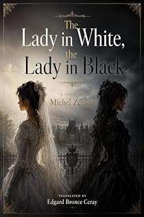

La Dame en blanc, la Dame en noir
by Michel Zévaco · translated by Edgard Bronce-Ceraypar Michel Zévaco · traduit par Edgard Bronce-Ceray
The bookLe livre
Two sisters so alike that nobody can tell them apart: Jocelyne de Hautfort, married to a powerful Spanish duke, and Dalila, called Hermosa. One of them had the Prince de Montcapet murdered. Which one, nobody knows — including, for much of the book, the reader. A late Zévaco of doubles and mistaken identity, with Ragastens caught in the middle.
Deux sœurs si semblables que nul ne les distingue : Jocelyne de Hautfort, mariée à un puissant duc espagnol, et Dalila, dite Hermosa. L'une d'elles a fait assassiner le prince de Montcapet. Laquelle ? Personne ne le sait — le lecteur pas davantage, une bonne partie du livre. Un Zévaco tardif de doubles et d'identités confondues, Ragastens pris au milieu.
From the opening pagesLes premières pages
———
The fortune of the Prince de Montcapet had tempted the covetousness of two enigmatic women, two sisters who so closely resembled each other that no one could tell them apart: Jocelyne de Hautfort, wife of the Duc de Sorrientès, a powerful Spanish lord, and her sister Dalila de Hautfort, also known as Hermosa — the lady in white and the lady in black. One of them — but which? No one knows — had the Prince de Montcapet murdered by the Comte Richard de Pompignan-Ragastens and had Rolande de Montcapet, a delightful child of eight and sole heiress of the Montcapets, abducted by an adventurer, Gaspard Pinacle, already guilty of the murder of Maître Laurent des Archelles, in whose office he had been a clerk and from whom he had stolen the prince's will. The Sorrientès inherited the immense Montcapet fortune, and Rolande, believed dead, saved from Pinacle by Hubert de Ragastens, fell into the hands of Gypsies.
Years passed. Rolande became a charming young woman; she now went by the name Rayon d'Or. Chance brought her to Paris, and there she found herself plunged into shadowy intrigues. The Duc de Guise coveted the throne of France and sought to do away with Henri III. The Duc de Sorrientès, his intimate, Ambassador of Spain at the French court, was hatching sinister plots. He had abducted Rolande and had her conveyed under heavy guard to Montcapet. Little by little, Rolande's memory seemed to awaken. She recognized the place where, as a very young girl, she had lived — where, as a child, she had known Hubert de Ragastens, her savior, her knight. It was Hubert who would deliver her again; of that she was certain.
As for Hubert de Ragastens, providentially freed from the trap into which Sorrientès had lured him, he was thinking as he walked:
"All in all, I have not too much cause to regret the rather unpleasant hours that our good Duc de Sorrientès has just put me through in his rat hole. I see clearly now into this whole affair, and I hold the confession of the two guilty parties. I know, moreover, that one of the two sisters is no accomplice… since she saved my life… As for Rolande, they are too shrewd to commit the blunder of striking her down. I am therefore fairly certain she is alive. On the other hand, I acted like a fool in going to seek her in their lair. It is not at the Hôtel Sorrientès that they must be hiding her. But where?…"
It was while musing in this fashion that he arrived at the Rue de la Truanderie and stopped before the Tavern of the Grand Duke, wondering whether he should go through the entrance on the Rue Mondétour to reach his garret directly, or whether he should enter the tavern. He said to himself:
"God's death! After the long fast imposed upon me by that hideous mountebank who calls himself Sorrientès, a copious meal, washed down with a few fine old bottles, does not strike me as superfluous. But since I am supposed to be dead to all the world?… Well then! The pretty Mauviette, my worthy landlady, shall carry up to my room whatever is needed, and I am quite certain she will not betray me."
And he walked deliberately into the common room.
In a corner, the formidable brigand known as Gyl-le-Loup sat at table with his three henchmen: Putois-l'Altesse, Maclou-la-Foudre, and Ribaud-l'Ardeur. He paid them no attention. They, on the other hand — men who lived in open warfare with society, mistrustful by necessity — tried hard to get a look at his face. They did not succeed. Besides, since he merely crossed the room and vanished at once into the kitchen, they troubled themselves no further about him.
In the kitchen, he whispered a few words in the ear of Mauviette Gueule d'Or, the pretty and enigmatic hostess of the establishment, who bestirred herself at once. And by the back door, he returned to his garret.
Milord Gendarme and Marasquin were not there. Ragastens had left for the Hôtel de Sorrientès without telling them a thing. They had waited for him. Seeing that he did not return, having not a farthing in their pockets as was their custom, they had gone out on the hunt — one had to find sustenance somehow. As for supposing that some misfortune might have befallen Monsieur le Chevalier, the idea never even crossed their minds. Could misfortune befall Monsieur le Chevalier?
Ragastens knew them far too well to worry about them.
Scarcely a few minutes after his return home, Mauviette Gueule d'Or appeared. She was laden with an enormous basket which, despite her frail and delicate appearance, she seemed to carry without effort. It was she who spoke first, all the while spreading the provisions on the table, and in that solemn manner which so thoroughly imposed itself upon her unruly clientele, she declared:
"You are very pale. I wager that, covered with wounds as you were, you committed the folly of fighting again."
Despite her scolding air, one could sense that she was not so indifferent as she wished to appear.
He defended himself with his clear laugh:
"No, no, my pretty hostess. Me, fight! Really now, while you're at it, go ahead and call me a common troublemaker!"
"You hardly avoid quarrels, in any case."
"That is not the same thing. I seek no one out. But if someone comes seeking me, they find me."
"Someone has come seeking you once more, then, that I find you looking so forlorn?"
"No. But someone played me a wretched trick, which I shall remember — you may be sure of that. And on that subject, I must tell you: it is likely that I am believed dead. Consequently, if anyone comes asking after me, you would oblige me greatly by saying that you have not seen me for a long time and that you have no idea what has become of me."
He had his usual air of jesting, and he offered no explanation. She asked for none and did not appear surprised. She understood well enough, however, that the matter was serious. And, fixing upon him her great periwinkle eyes, gravely, she assured him:
"You may rely on me. Mauviette Gueule d'Or has never betrayed anyone. She shall not begin with you. Moreover, while you remain here, I shall see to it that no one suspects your presence."
He thanked her:
"That is more than I would have dared ask. Many thanks."
And he paid her a compliment:
"You are the pearl of landladies, just as you are the prettiest and most serious tavern-keeper in all of Paris."
She did not smile. One would have thought she had not heard the compliment. She gave a nod of her head and, in her solemn way:
"God keep you, monsieur," she said.
And she disappeared.
Ragastens must have been accustomed to her manner, for he paid it little attention. He sat down at table at once, and one may well believe that he did full justice to the meal of Mauviette Gueule d'Or, which he washed down copiously. He then allowed himself two hours of rest.
The excerpt ends here — about 1,211 words of the published edition.L'extrait s'arrête ici — environ 1,211 mots de l’édition parue.
KindlePaperbackBrochéContextContexte
Zévaco was a schoolmaster, then a cavalry officer, then an anarchist journalist who fought duels over his editorials and went to prison for his convictions. He came to the novel in his forties and conquered it at once: from 1900 his serials ran in the great Paris dailies and were read by millions. Sartre, remembering his childhood in Les Mots, called him a writer of genius. He has been read in Persian, Turkish, Arabic, Romanian and Spanish. In English, for more than a century, he was effectively unavailable. The Zévaco Project is the first attempt ever made to translate his complete novels — one volume at a time, until the canon is closed.
Zévaco fut maître d'école, puis officier de cavalerie, puis journaliste anarchiste — un homme qui se battait en duel pour ses éditoriaux et fit de la prison pour ses convictions. Il vint au roman passé la quarantaine et le conquit aussitôt : à partir de 1900, ses feuilletons paraissaient dans les grands quotidiens parisiens et se lisaient par millions. Sartre, se souvenant de son enfance dans Les Mots, le tenait pour un écrivain de génie. On l'a lu en persan, en turc, en arabe, en roumain, en espagnol. En anglais, pendant plus d'un siècle, il fut pratiquement introuvable. Le Projet Zévaco est la première tentative jamais faite de traduire son œuvre romanesque complète — un volume après l'autre, jusqu'à la clôture du corpus.
The whole programmeTout le programme